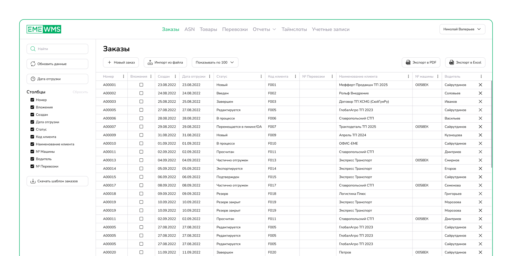
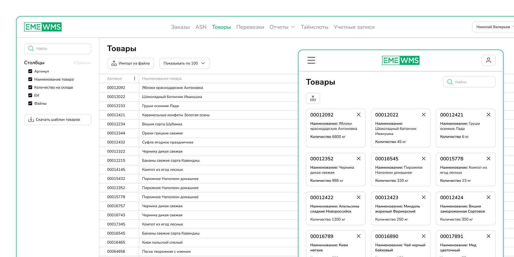
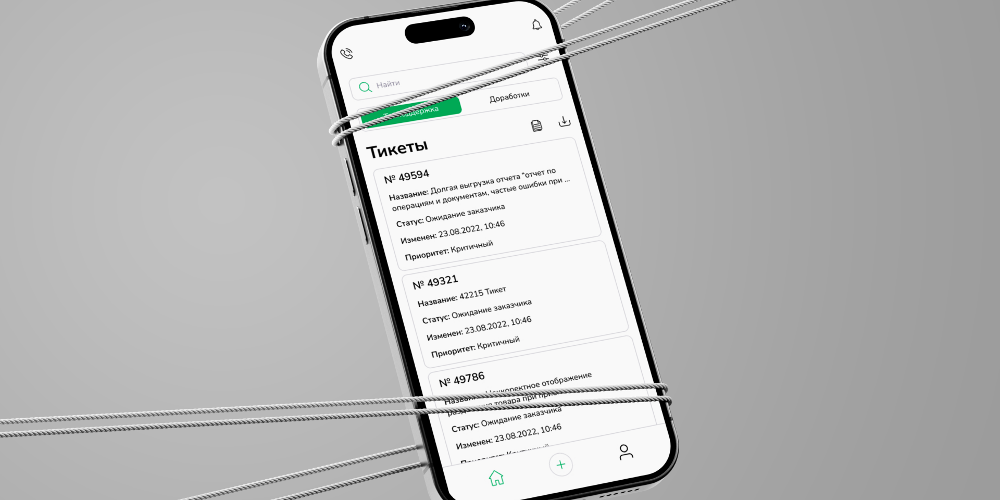
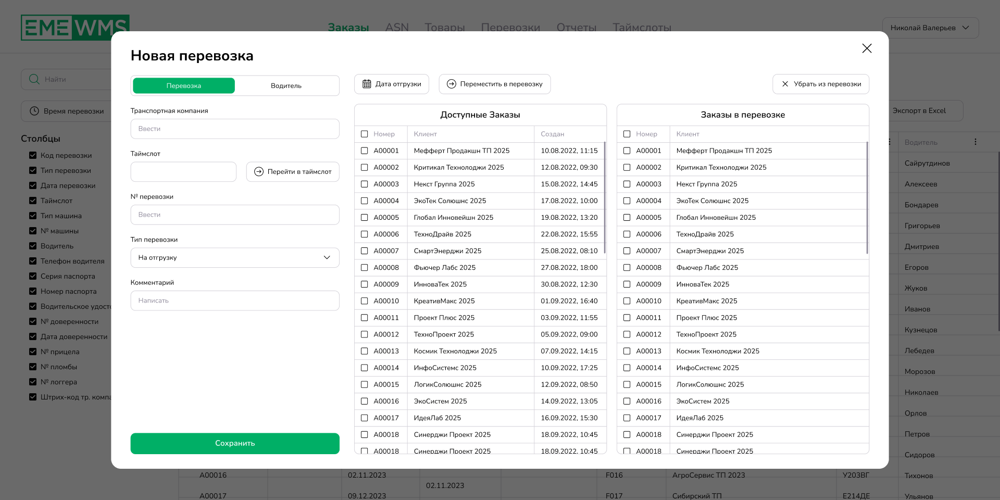
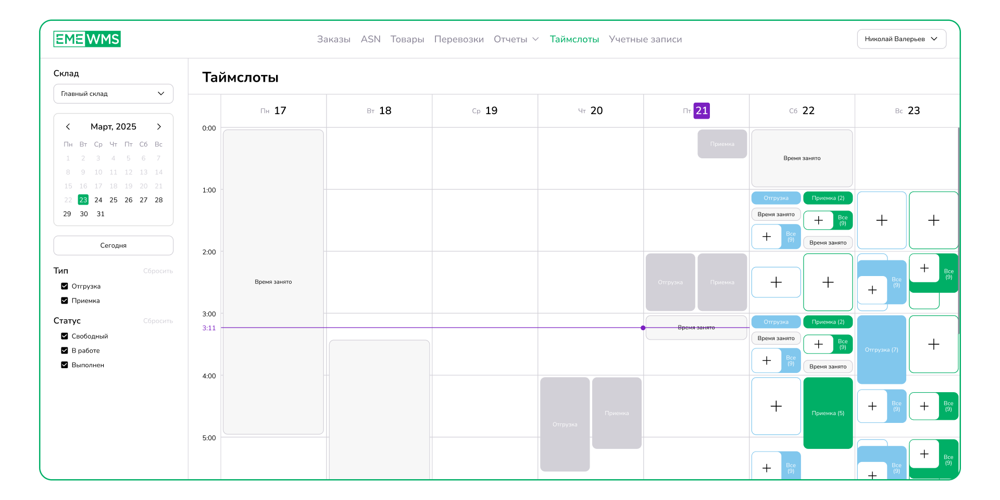
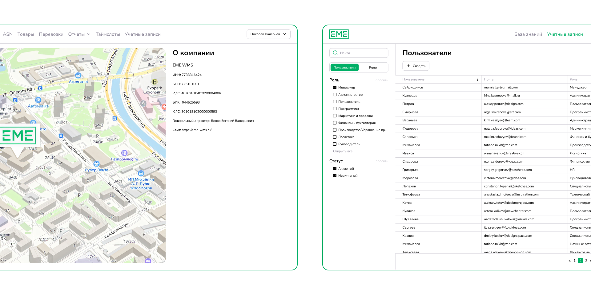
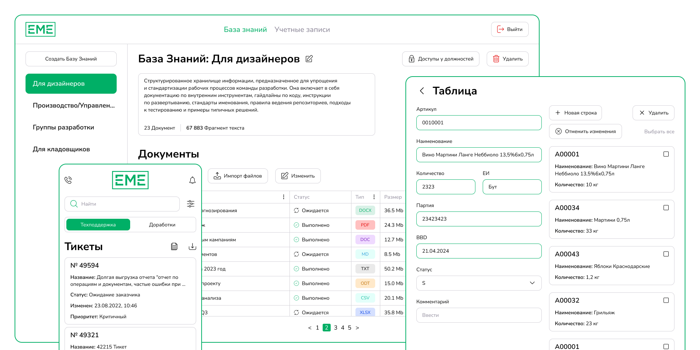
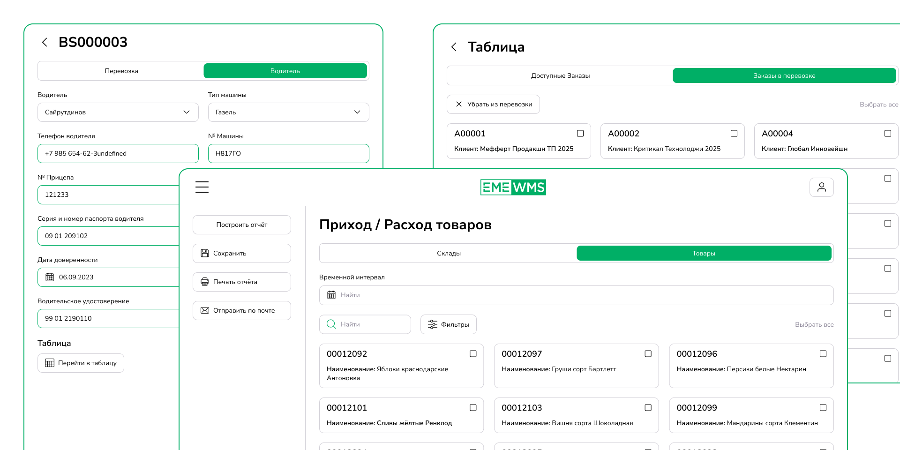

Three products. One consistent experience
I redesigned interfaces across EME's 3PL portal, support portal, and knowledge base, improving everyday workflows and building a shared design system.
Making three products feel like one
EME's 3PL portal, support portal, and knowledge base were built for different tasks. I worked on making their interfaces more consistent and improving the workflows people used every day.

My role
I was responsible for the shared design system across EME's 3PL portal, support portal, and knowledge base. I audited around 180 screens, improved key workflows based on user research and support feedback, and worked with frontend developers to standardize components, states, and interaction patterns.
From orders to support tickets
Making orders easier to manage
I redesigned key workflows in the 3PL portal, focusing on order management, shipment statuses, and warehouse scheduling.
Clearer order management
I reorganized order data into structured tables with visible statuses, filters, and customizable columns, making it easier to find and manage orders.

Design decision
I kept key order details visible in one table, including statuses, shipping dates, and customer information. Filters and customizable columns let users adjust the view to their tasks instead of working with the same data every time.

From order selection to transportation
I worked on the screens where operators select orders for transportation, review assigned shipments, and manage driver and vehicle information.
Clearer transport assignments
I separated available orders from those already in transport and organized driver and vehicle details into a dedicated form.

Simplifying warehouse scheduling
I worked on the time-slot calendar for receiving and shipping, where teams needed to check occupied slots and plan warehouse operations.
Easier access to occupied slots
I simplified how users access occupied time slots through the shipment and transport sections, making it easier to check schedules before planning new operations.

The challenge wasn’t the amount of data
UX research revealed problems in routine tasks, from finding account settings to assigning priorities when creating support tickets.
Account in the wrong place
Users expected account access in the header, not hidden inside the user menu.
Missing ticket priority
Users couldn't set a priority when creating a new support ticket.
Put controls where users need them
I moved account access to the header and added priority selection directly to ticket creation.
Logistics in focus



From fragmented interfaces to measurable results
I redesigned key workflows and helped build a shared design system across EME's products, making everyday operations clearer and interface development more consistent.
- Activation conversion
- +27%
- Support load
- −30%
- Mockup preparation time
- −35%